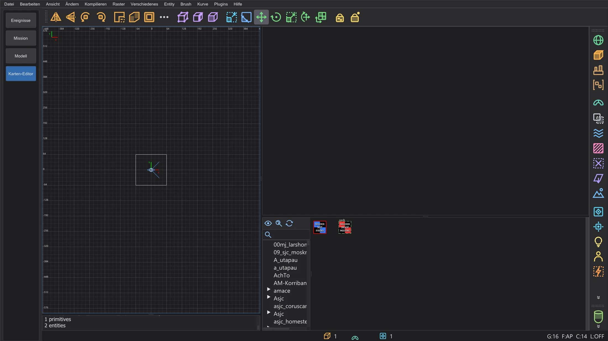
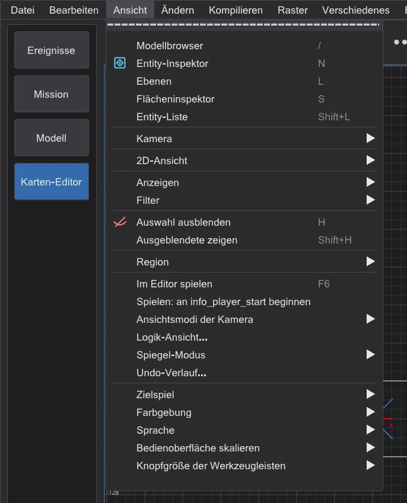
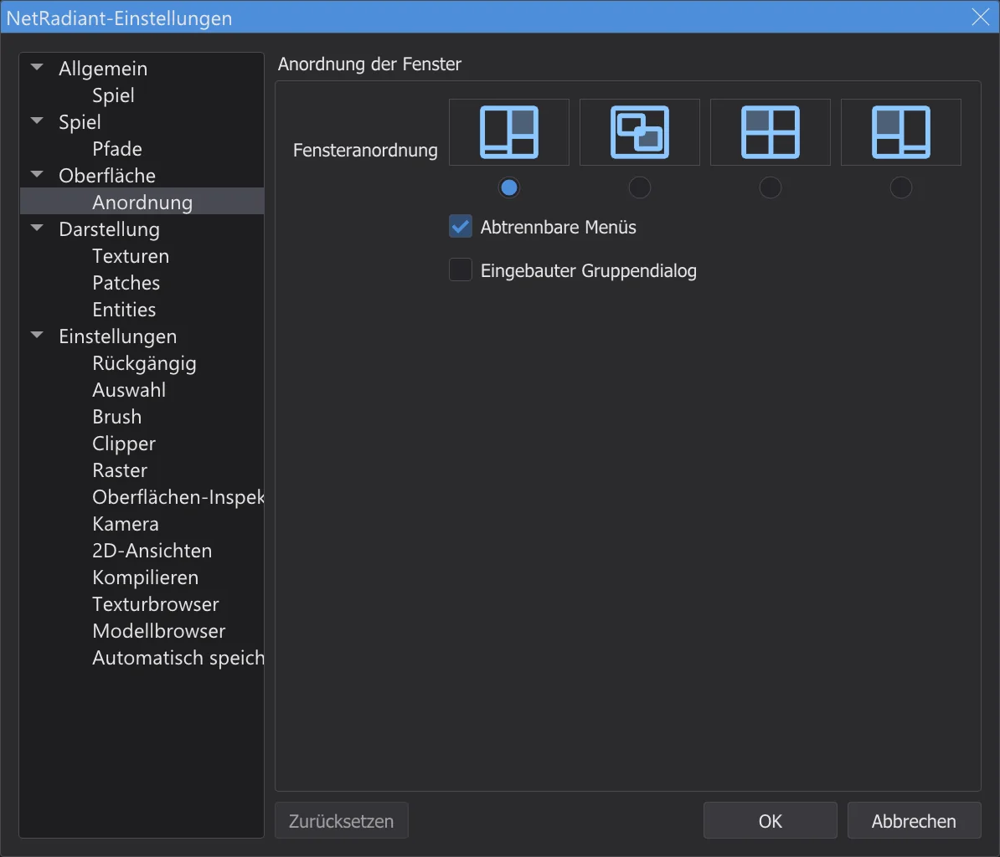
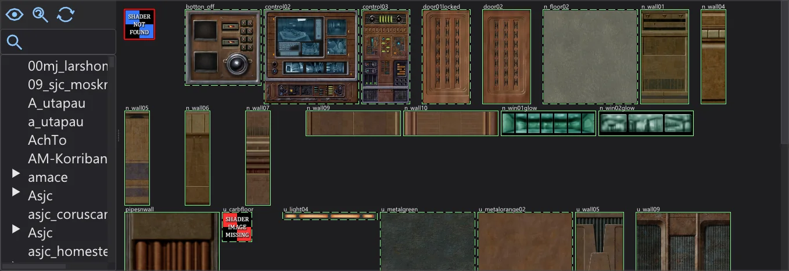
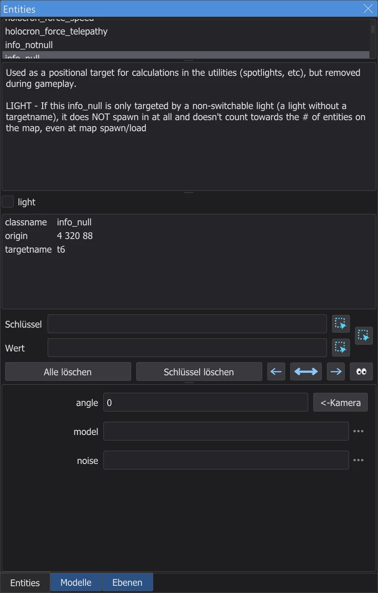
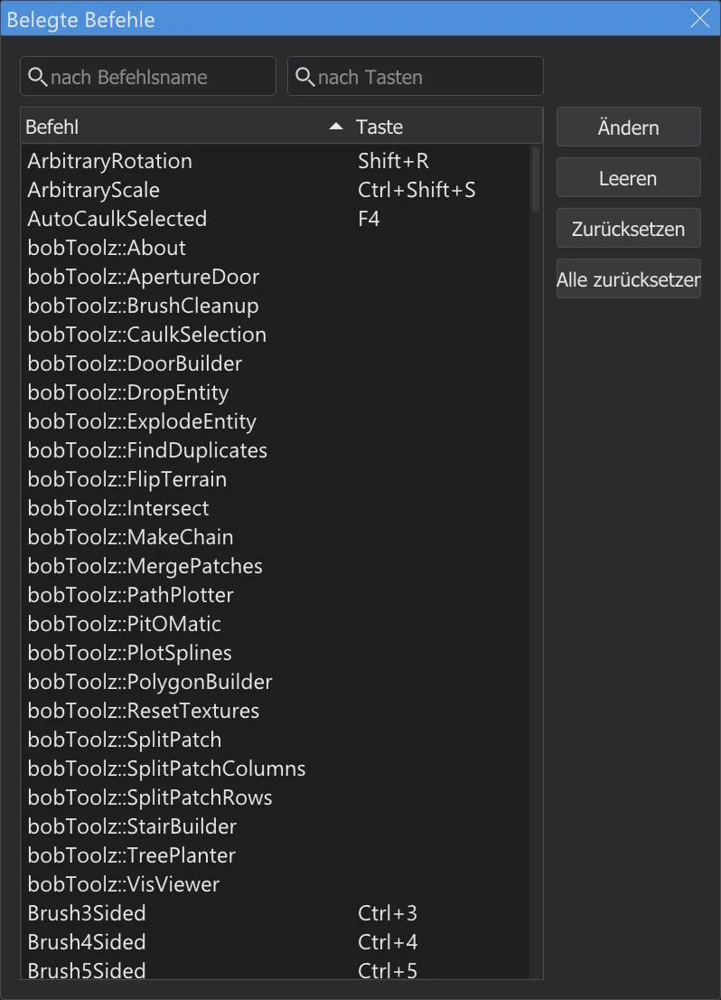

Der Karten-Editor
Karten für Jedi Academy und Jedi Outcast bauen und bearbeiten - mit den Menüs, Fenstern und Tastenkürzeln von NetRadiant-Custom, damit Anleitungen dafür Schritt für Schritt passen.

Karten öffnen und speichern#
Schalte in der Modusleiste auf Karten-Editor. Der Editor arbeitet mit dem Spiel, für das das Programm eingerichtet ist - Jedi Academy (auch mit Movie Duels) oder Jedi Outcast - und dessen Texturen, Shadern und Entity-Definitionen; beim ersten Mal lädt er sie im Hintergrund. Ohne Spielordner in den Programmeinstellungen gibt es keine Texturen; unter Einstellungen (Seiten Spiel und Pfade) kann der Karten-Editor auch ein anderes Spiel und andere Ordner verwenden. Datei > Neue Karte beginnt eine leere Karte, Öffnen (Strg+O) öffnet eine .map-Datei, .bsp öffnen eine fertige Karte des Spiels (Seite Karten-Editor: fertige Karten öffnen und ändern), Speichern (Strg+S) und Speichern unter schreiben sie - wie bei NetRadiant-Custom bleibt die vorige Datei als .bak erhalten. Die zuletzt geöffneten Karten stehen unten im Menü Datei. Bevor eine Karte mit ungespeicherten Änderungen geschlossen wird, fragt der Editor, ob er sie speichern soll.
Menüs, Fenster und Anordnungen#
Menüs, Werkzeugleisten und Dialoge sind aufgebaut wie in NetRadiant-Custom (Version 20260114): dieselbe Reihenfolge, Trenner, Tastenkürzel und Mnemoniks (Alt + unterstrichener Buchstabe). Die Beschriftungen stehen in der Programmsprache, die Farben kommen aus dem Farbschema des Programms. Die Plugins beschreibt die Seite Karten-Editor: Plugins. Die Bauwerkzeuge beschreibt die Seite Karten-Editor: Bauwerkzeuge, das Kompilieren mit q3map2 die Seite Karten-Editor: Karte bauen.
Im Karten-Editor wird die Menüleiste des Programms zur Menüleiste von NetRadiant-Custom (Datei ... Hilfe): es gibt nur diese eine, die Skript-Reiter sind ausgeblendet, und der Editor beginnt direkt darunter. Was das Programm auch hier braucht, steht am Ende von zwei Menüs: Verschiedenes hat Sprache, Farbschema und Skalierung, Hilfe hat Handbuch (F1, dieses Handbuch) und Über JK Studio; Nach NetRadiant-Update suchen sucht nach einer neuen Fassung dieses Programms. Verlässt du den Modus in der Modusleiste, sind die Menüs und Reiter des Programms wieder da.
Jedes Fenster des Editors - die 2D-Ansichten, die Kamera, die Konsole und der Texturbrowser - hat einen feinen Rahmen, damit man sieht, wo eines endet und das nächste beginnt; dazwischen liegt der Teiler von NetRadiant-Custom mit seinen Griffpunkten. Das aktive Fenster - das zuletzt angeklickte - hat seinen Rahmen in der Akzentfarbe des Farbschemas, so wie NetRadiant-Custom die aktive 2D-Ansicht umrandet (Ansicht > Anzeigen > Fensterrahmen zeigen schaltet das für die 2D-Ansichten aus). Teiler ziehen ändert die Größen; bis an den Rand gezogen, klappt ein Fenster ein und lässt sich wieder herausziehen.

Bearbeiten > Einstellungen (P) enthält die Einstellungen von NetRadiant-Custom. Auf der Seite Anordnung wählst du die Fensteranordnung - Regulär, Schwebend, Geteilt oder Regulär links - und ob der Gruppendialog mit Entities und Texturen im Hauptfenster sitzt (Eingebauter Gruppendialog). Die neue Anordnung gilt, sobald du OK drückst; NetRadiant-Custom braucht dafür einen Neustart. In Schwebend schweben die Fenster im Programmfenster.

2D-Ansicht und Kamera#
| Rechte Maus ziehen (2D) | Ansicht verschieben |
| Mausrad, Alt + rechte Maus ziehen (2D) | Zoomen |
| Strg + Tab | Nächste 2D-Ansicht (XY, XZ, YZ) |
| Mittlere Maus (2D) | Kamera zu dem Punkt drehen; mit Strg fährt die Kamera dorthin |
| Rechtsklick in die Kamera | Freies Umsehen an und aus: die Maus dreht die Ansicht, W A S D oder die Pfeiltasten bewegen |
| Pfeiltasten (Kamera) | Vor, zurück, drehen; A / D seitwärts; das Mausrad fährt vor und zurück |
| Tab | Kamera auf die Auswahl |
| Umschalt + [ / ] | Wie die Kamera zeichnet (Drahtgitter, flach, texturiert ...) |
| [ / ] | Raster kleiner / größer; 1 ... 9 stellen es direkt ein (1 bis 256 Einheiten) |
Wählen und bauen#
| Linksklick | Wählt, was unter der Maus liegt; ein weiterer Klick auf dieselbe Stelle wählt, was dahinter liegt |
| Umschalt + linke Maus ziehen | Wählt (oder entwählt) alles, worüber die Maus fährt |
| Umschalt + rechte Maus ziehen | Mit einem Rechteck wählen |
| Strg + linke Maus (Kamera) | Einzelne Flächen wählen |
| Linke Maus auf der Auswahl ziehen | Verschieben; neben einem gewählten Brush: seine Flächen ziehen und ihn so vergrößern oder verkleinern |
| Linke Maus im Leeren ziehen (2D, nichts gewählt) | Einen neuen Brush mit der aktuellen Textur aufziehen |
| Esc | Auswahl aufheben |
| Leertaste | Auswahl verdoppeln |
| Entf | Auswahl löschen |
| Strg + Z | Rückgängig |
| Strg + Umschalt + Z | Wiederholen |
| Strg + C / V | Kopieren / einfügen |
| H | Auswahl verstecken |
| Umschalt + H | Alles Versteckte zeigen |
Texturen#

Der Texturbrowser zeigt die Texturen und Shader des Spiels, Ordner für Ordner. In der Anordnung Regulär sitzt er unter der Kamera; in den anderen Anordnungen öffnet ihn Ansicht > Texturbrowser (T). Ein Klick auf eine Textur macht sie zur aktuellen und legt sie auf die gewählten Brushes oder Flächen; die mittlere Maustaste wählt sie nur. Rechte Maus ziehen rollt, ein Rechtsklick öffnet das Menü der Textur. In der Kamera nimmt die mittlere Maustaste auf einer Fläche deren Textur auf; zusammen mit Strg oder Umschalt malt sie die aktuelle Textur auf Flächen, wie in NetRadiant-Custom.
Entities#

Ein Rechtsklick in die 2D-Ansicht (ohne die Maus zu bewegen) öffnet das Entity-Menü: eine Klasse wählen setzt dort eine neue Entity. Sind Brushes gewählt und du nimmst eine Brush-Klasse wie func_door, werden die Brushes zu dieser Entity. Ansicht > Entity-Inspektor (N) zeigt die gewählte Entity: ihre Klasse mit der Beschreibung, die Spawnflags als Kästchen, alle Schlüssel und Werte und Felder für die Schlüssel, die die Klasse kennt. Schlüssel und Wert eintippen und Enter drücken setzt ihn. Ansicht > Entity-Liste (Umschalt+L) listet alle Entities der Karte. Entity > Entities verbinden (Strg+K) verbindet zwei gewählte Entities mit target und targetname.
Konsole#
Die Konsole (in der Anordnung Regulär unter der 2D-Ansicht, sonst Ansicht > Konsole, O) zeigt dieselben Meldungen wie NetRadiant-Custom: was geladen wurde, Warnungen zu fehlenden Texturen und Shadern und wie lange Laden und Speichern dauerten.
Tastenkürzel#

Der Karten-Editor hat die Tastenkürzel von NetRadiant-Custom. Sie gelten, solange der Karten-Editor zu sehen ist; die Kürzel des Programms sind dann aus. Bearbeiten > Tastenkürzel (Strg+Umschalt+P) listet jeden Befehl mit seiner Taste; die Felder oben suchen nach Befehlsname oder nach Tasten. Doppelklick auf einen Befehl (oder Ändern), dann die neue Taste drücken; Leeren nimmt die Taste weg, Zurücksetzen holt die Taste von NetRadiant-Custom zurück, Alle zurücksetzen alle. Gehört die Taste schon einem anderen Befehl, fragt der Editor vorher.
[ und ] AltGr brauchen (deutsch: AltGr+8 / 9), funktionieren sie trotzdem - [ und ] ändern das Raster, und Umschalt+AltGr+8 / 9 gelten als Umschalt+[ / ]. Strg+[ und Strg+] (Sichtweite kleiner / Sichtweite größer) lassen sich aber nicht drücken, weil AltGr schon als Strg+Alt zählt - genau wie in NetRadiant-Custom. Nimm das Menü Ansicht > Kamera oder gib den Befehlen CubicClipZoomIn und CubicClipZoomOut in Belegte Befehle andere Tasten.